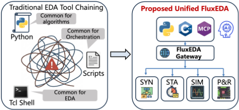
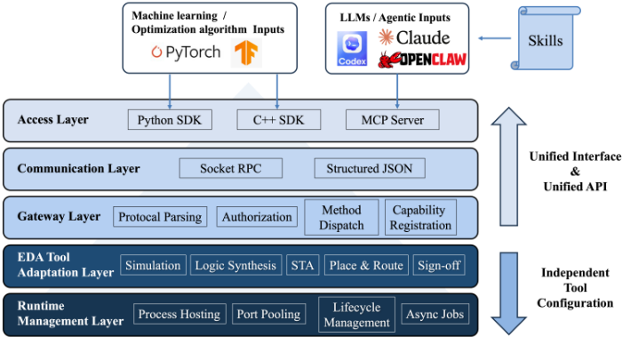
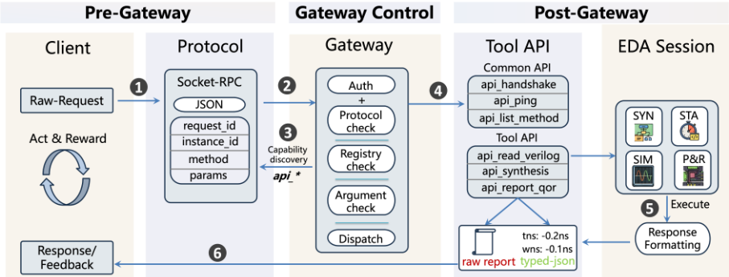
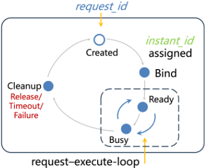
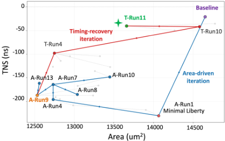

FluxEDA：面向有状态 Agentic EDA 的统一执行基础设施
论文针对现有 Agentic EDA 集成依赖脚本级/请求级批量交互、无法保留工具状态、难以支撑生产环境迭代优化的问题，提出 FluxEDA——一个面向有状态 Agent 化 EDA 的统一执行基础设施。方法上，它在上层 Agent 与异构 EDA 工具之间插入稳定能力层：通过 MCP Server 与结构化 Socket-RPC 封装工具原生功能，仅对显式注册的 api_* 方法分发请求，并维护持久化后端实例（instance_id 路由、心跳保活、超时控制、异步长任务、状态回滚）；同时采用渐进式能力暴露（api_ping/api_list_method 按需发现）以节省 LLM 上下文预算，并用领域 Skills 层独立承载工作流知识，与 MCP 层实现关注点分离。在两个商业后端案例（post-route timing ECO 与标准单元子库优选）中，系统基于 GPT-5.4 与 OpenAI Codex 框架实现了多步分析-执行-回滚的持续优化：ECO 案例消除全部 hold 违例且保持 setup 增益；子库案例仅用 36 个 cell 引用/23 个家族（较基线减少 75.8%/54.9%）即恢复 88.4% 的 TNS 差距。结论表明，有状态、受治理的基础设施层是 Agent 辅助自动化的实用基础。
现有 Agentic EDA 集成多依赖脚本级或请求级批量交互，每步由生成的命令与事后日志解析中介，无法提供持久、结构化、可治理的工具状态，难以在生产环境中支撑细粒度持续优化；同时异构 EDA 工具接口林立（Tcl/Python/Bash、专有 shell、割裂的数据格式）造成 N×M 集成瓶颈；且不受约束地执行 LLM 生成脚本会带来幻觉命令、静默状态损坏与不可预测的工具崩溃等可靠性风险。
FluxEDA 在上层客户端与底层 EDA 工具环境之间插入统一执行栈，采用五层架构（Access、Communication、Gateway、EDA Tool Adaptation、Runtime Management）：Gateway 通过结构化 Socket-RPC 封装工具功能，仅对注册的 api_* 方法分发请求并支持能力发现（api_ping、api_list_method）；对外主要通过 MCP Server 提供标准化 Agent 接入，另支持 Python/C++ SDK。后端实例由运行时层管理生命周期（instance_id 绑定与路由、端口分配、就绪检查、心跳保活、超时控制、异步长任务、显式释放/失败清理），跨调用保留已加载设计与中间状态，支持状态复用、分支探索与回滚。采用渐进式能力暴露：先只提供紧凑发现面，详细调用要求按需查询，避免 flat MCP 接口随能力增长膨胀并占用 LLM 上下文预算。领域 Skills 层独立编码工作流知识（任务分解、输入校验、执行顺序、会话上下文保持、可复用操作模板），与 MCP 层形成'能力如何安全暴露'与'能力按何顺序组合'的关注点分离。
Timing ECO 案例：基线 setup WNS/TNS 为 -0.81/-37.37 ns（140 条违例路径），hold WHS/THS 为 -0.39/-1.33 ns（4 条违例路径）；Iteration 1 后 setup WNS 改善至 -0.76 ns、TNS 至 -34.78 ns、违例路径从 140 降至 130；Iteration 2 无进一步改善被回滚；Iteration 3 从保留的 Iteration 1 状态恢复并完成 hold 修复，hold WHS 从 -0.39 ns 提升至 +0.01 ns、THS 从 -1.33 ns 至 0.00 ns，消除全部 hold 违例且不牺牲 setup 增益。
子库优选案例：全库基线 area 为 14,651.55 μm²、WNS/TNS 为 -0.246/-20.996 ns；A-Run9 将 area 降至 12,530.89 μm² 但 WNS/TNS 恶化至 -1.114/-186.934 ns；最终 T-Run11 达到 13,659.95 μm²、WNS/TNS 为 -0.448/-40.306 ns（157 条违例路径），仅使用 36 个精确 cell 引用、23 个 cell 家族，相对基线 used references 与 families 分别减少 75.8% 与 54.9%，并恢复 A-Run9 TNS 差距的 88.4%。
系统设置：使用 GPT-5.4 作为主 LLM，Agent 编排基于 OpenAI Codex 框架实现；论文未与其他 Agent 框架或脚本级基线进行定量对比，也无消融实验。
与 ChatEDA 等脚本生成式框架以及 MCP4EDA、AutoEDA 等 MCP/微服务式集成相比，FluxEDA 的核心区别在于持久实例执行模型：不是把每个请求当作隔离的 shell 调用，而是标准化工具运行时状态的创建、保留、复用与回收，支持跨调用的状态复用、分支探索与回滚，从而区别于简单的 RPC wrapper；同时以渐进式能力暴露取代一次性发布全部方法的 flat MCP 接口，并将能力暴露治理（MCP/Gateway 层）与工作流编排知识（Skills 层）显式解耦。
相关度级别：high
命中能力域：3.3 Agent 架构与工具使用 | 3.1 上下文工程与记忆 | 3.5 评测与可靠使用
理由：论文的核心贡献不是 EDA 算法而是 Agent 工具基础设施：MCP Server 标准化接入、注册式 api_* 方法划定执行边界、持久化有状态工具会话、渐进式能力暴露以节省 LLM 上下文预算、Skills 层承载工作流知识、运行时治理（授权、心跳、超时、回滚）。这些直接命中 3.3 的核心技术（MCP 等工具协议、技能系统、Agent harness 与单 Agent 执行可靠性），渐进式能力暴露对应 3.1 的上下文窗口管理，执行治理与可靠性动机契合 3.5。虽然应用领域是团队不涉及的芯片 EDA，但'把异构内部工具封装为有状态、可治理的 MCP 服务'这一架构模式可平移到团队自身的工程自动化工具建设中。
建议动作：深入精读并做内部分享
arXiv:2603.25243v1 [cs.AR] 2026年3月26日
Zhengrui Chen, Zixuan Song, Yu Li, Qi Sun, Cheng Zhuo 浙江大学，中国杭州

为解决这一问题，诸如模型上下文协议（Model Context Protocol, MCP）[13] 等标准化方案应运而生。近期工作（例如 MCP4EDA [14]、AutoEDA [15]）采用 MCP 或相关的微服务概念来降低异构电子设计自动化（EDA）工具之间的集成复杂度。然而在实践中，大多数现有框架仍然通过脚本级或请求级的批量交互将 Agent 与 EDA 引擎耦合，其中每一步都由生成的命令和事后日志解析所中介。这样的交互模型虽然能够支持工作流编排，但并不能充分提供后端物理设计所需的持久化、结构化且可治理的工具状态 [16]。因此，Agent 在真实工具上下文上执行细粒度、持续优化的能力仍然受限，尤其是在面向生产的商业环境中。
此外，在缺乏细粒度运行时治理的情况下盲目执行这些由大语言模型（LLM）生成的脚本，会在工业环境中带来严重的可靠性风险。正如 Andrew Kahng 等人所强调的 [17]，当前的 Agentic EDA 框架缺乏严格的语义边界，允许 LLM 不受限制地访问底层执行环境 [4]。这种不受约束的动作空间使物理设计流程容易受到幻觉命令、静默状态损坏以及不可预测的工具崩溃的影响，从根本上限制了其在生产关键型工作流中的可行性。
为解决这些局限性，我们提出了 FluxEDA，一个面向可靠且有状态的 Agentic EDA 的统一基础设施底座。FluxEDA 并非通过碎片化的脚本或临时的 shell 接口直接暴露异构 EDA 工具，而是在上层客户端与底层工具环境之间插入一个稳定的能力层，如图 1 所示。在其核心，FluxEDA Gateway 通过结构化的 Socket-RPC 接口封装工具原生功能，并为工具交互提供一个受管理的执行底座。该网关主要通过一个 MCP Server 进行访问，以实现面向 Agent 的标准化集成，同时也支持 Python 和 C++ 软件开发工具包（SDK）以供编程方式使用。通过这一设计，涵盖逻辑综合、物理设计与验证的异构引擎被吸纳进一个统一的应用程序接口（API）空间内，
大语言模型与自主 Agent 正被越来越多地探索用于电子设计自动化（EDA）自动化，但许多现有集成仍依赖于脚本级或请求级的交互，这使得在实际面向生产的环境中难以保持工具状态并支持迭代优化。在本工作中，我们提出 FluxEDA，一个面向智能体化 EDA 的统一且有状态的基础设施底座。FluxEDA 引入了一种受管理的、基于网关的执行接口，具备结构化的请求与响应处理。它还维护持久化的后端实例。这些特性共同使得上层 Agent 与可编程客户端能够通过得以保留的运行时状态与异构 EDA 工具进行交互，而非通过孤立的 shell 调用。我们通过两个具有代表性的商用后端案例研究对该框架进行评估：自动化的布线后时序 ECO 与标准单元子库优化。结果表明，FluxEDA 能够在真实工具上下文之上支持多步分析与优化，包括状态复用、回滚以及协同的迭代执行。这些发现表明，一个有状态且受治理的基础设施层是 Agent 辅助 EDA 自动化的切实可行的基础。
随着集成电路（IC）特征尺寸的持续缩小和晶体管数量的指数级增长，现代芯片设计已变得极其复杂。这种前所未有的规模使得整个芯片设计流程必须高度依赖电子设计自动化（EDA）工具 [1]。在工业实践中，专职的 EDA 工程师依靠定制脚本来编排这些复杂的工作流，将彼此独立的引擎（如综合、布局、布线和时序）手动整合为一个连贯的物理设计流程。然而，这种流程整合工作高度重复、耗费人力且容易出现人为错误 [2]。EDA 团队往往需要投入大量工程资源来维护基线脚本功能并处理环境配置，而无法专注于探索最优设计空间或开发先进的启发式方法 [3]。
大语言模型（LLMs）和自主 Agent 的最新进展为减轻这一负担、加速 IC 设计流程的研发提供了新的机遇。Agentic AI 系统在理论上具备理解高层规格、自主执行多步工具链并迭代优化设计参数的能力 [4]。早期的框架（如 ChatEDA [5]）试图通过生成针对特定工具的脚本来利用这一能力。然而，现代 EDA 工具——既包括开源的学术框架，也包括工业级的商用引擎——彼此高度隔离。它们使用各不相同的接口、专有的 shell 环境（如 Tcl [6-8]、Python [9]、Bash [10-12]）以及互不连通的数据格式。让 AI Agent 直接与这一异构生态系统对接，会造成令人望而却步的 N × M 集成瓶颈。

数字实现流程。这使得 Agent 能够在持久化的工具会话之上运行，而非局限于离散的脚本边界，同时也让常规软件客户端能够与同一个受管理的运行时进行交互。此外，FluxEDA 还融合了健壮的平台级运行时管理，包括实例路由、基于心跳的会话维护、超时控制以及异步长任务执行，从而能够在面向生产的 EDA 环境中实现稳定的长时程交互。
虽然 MCP 服务器与网关建立了持久化的工具访问界面，但仅靠原始 API 暴露并不足以应对复杂的数字实现。为了弥合底层工具调用与高层设计意图之间的鸿沟，FluxEDA 引入了领域特定的 Skills [18] 来编码显式的工作流知识。Skills 提供结构化的流程性指导，而非完全依赖 Agent 的隐式推理来驾驭复杂的 EDA 流程。这涵盖了任务分解、输入验证、执行顺序、会话上下文保持以及可复用的操作模板。因此，该架构强制实现了严格的关注点分离：MCP 层负责管理工具能力如何被安全地暴露与管理，而 Skills 层则规定应在何时、以何种顺序组合这些能力来完成具体的流程任务。
为了验证我们提出的架构，我们在工业界商用 EDA 环境中对 FluxEDA 进行了实例化。我们在两个高度迭代、具有代表性的后端场景中展示了该框架的有效性：自动化的布线后时序 ECO 收敛与 Pareto 驱动的子库优化。主要贡献总结如下：
本文其余部分的组织结构如下。第 2 节详细介绍我们的框架。第 3 节为实验部分。最后，第 4 节对本文进行总结。
图 2 展示了 FluxEDA 的总体架构。该系统被组织为五个层次：访问层（Access）、通信层（Communication）、网关层（Gateway）、EDA 工具适配层（EDA Tool Adaptation）和运行时管理层（Runtime Management）。FluxEDA 并不直接向用户或 Agent 暴露特定于工具的 shell，而是在前端客户端与后端 EDA 环境之间插入一个通用的执行栈。这种组织方式在不同接口之间提供了一致的调用路径，同时将特定于工具的执行与会话管理保留在基础设施层内部。
从 EDA 的角度来看，该架构的主要目的是在持久化执行模型下支持多步骤、跨工具的交互。许多实际任务并非单条命令，而是由相互依赖的分析、报告和精化步骤构成的序列，这些步骤必须在同一份已加载的设计和相同的运行时状态上执行。因此，FluxEDA 将统一访问、受控的方法分派和受管理的工具会话整合为一个单一的软件基座，以支持可编程和 Agent 辅助的 EDA 自动化。

图 3 以带编号的信号流形式展示了 FluxEDA 中的端到端请求路径，该信号流跨越网关前、网关控制和网关后三个阶段。在步骤 (1) 中，传入请求被封装为一条结构化的、基于套接字的远程过程调用（RPC）消息，其中携带目标方法、参数和执行元数据，随后被转发至公共通信与网关路径。
跨越 RPC 边界后，请求进入网关控制阶段。在步骤 (2) 中，FluxEDA 会应用执行前所需的控制检查，包括协议验证、注册表查找、参数检查以及能力级授权。网关并不直接暴露任意的 shell 过程，而是仅针对显式注册的 api_* 方法来解析请求，从而为后端访问定义了清晰的执行边界。网关还在步骤 (3) 中支持能力发现，客户端可以通过公共内省应用程序接口（API）查询连通性、可用方法以及相关接口元数据。
经过验证的可执行请求在步骤 (4) 中被分派到相应的公共 API 或工具特定 API。在步骤 (5) 中，目标后端实例执行所请求的操作，结果沿网关后路径进行规范化。最后，在步骤 (6) 中，FluxEDA 向调用方返回结构化响应，其中包括状态信息，以及视所选返回模式而定的类型化数据、类文本输出或原始工件。通过在调用、内省和结果交付中使用统一的通信契约，FluxEDA 使上层自动化与可执行接口保持一致，并降低了对工具特定 shell 约定的依赖。
面向 Agent 的 EDA 基础设施面临的一个实际挑战是：如何在不使上层客户端不堪重负的前提下暴露工具能力。在实践中，一种预先发布所有可调用方法及其描述的扁平化模型上下文协议（MCP）接口，不仅会随着后端能力的增长而变得日益臃肿，还会消耗基于大语言模型（LLM）的 Agent 宝贵的上下文预算 [19]。为解决这一问题，FluxEDA 采用了渐进式能力暴露机制：网关首先仅提供一个紧凑的发现接口面，例如通过 api_ping 和 api_list_method 等内省 API，而详细的调用需求仅在需要时才进行查询。这一设计使协议接口面在后端工具不断演进的过程中保持紧凑且可扩展。与此同时，工作流知识则通过领域特定的技能（Skills）单独处理，这些 Skills 在已发现的方法空间之上引导能力选择与调用顺序，而不会使协议层本身过载。

Below the gateway, FluxEDA uses tool adapters to expose native tool capabilities through a consistent callable interface. The purpose of this layer is not to erase tool-specific behavior, since timing analysis, synthesis, simulation, and implementation tools naturally differ in command semantics, state models, and report formats. Instead, these differences are confined behind registered api_* methods, allowing upper layers to invoke backend operations without depending directly on tool-specific shell conventions.
This interface abstraction is coupled with lifecycle-managed backend instances. Rather than treating each request as an isolated shell invocation, FluxEDA reuses managed instances that preserve the loaded design, execution context, and intermediate state across multiple calls. This execution model is essential for practical EDA automation, where a task often spans dependent steps such as design loading, report inspection, timing analysis, optimization, and reanalysis under updated state.
Figure 4 illustrates this mechanism. A backend tool process is first brought under runtime management and bound to an instance_id , which serves as the routing handle for subsequent calls. Once established, the same instance can be reused by a sequence of requests while preserving the loaded design and internal tool context across interactions. In contrast, each RPC carries a distinct request_id for per-call tracking, response matching, and error reporting. This separation allows FluxEDA to maintain both instance continuity and request-level observability within a single invocation framework.
The runtime management layer sustains this lifecycle through process startup, instance binding and routing, port allocation, readiness checks, liveness monitoring, support for long-running operations, and cleanup on explicit release, timeout, or failure. As a result, higherlevel automation can operate on stable backend instances without repeatedly reconstructing the tool environment. This persistentinstance execution model distinguishes FluxEDA from a simple RPC wrapper: FluxEDA standardizes not only how backend tools are invoked, but also how their runtime state is created, preserved, reused, and reclaimed for iterative and cross-tool EDA tasks.
我们通过两个具有代表性的后端案例研究，在商用 EDA 环境中对 FluxEDA 进行评估。该系统采用 GPT-5.4 [20] 作为主要的大语言模型，而 Agent 编排则基于 OpenAI Codex 框架 [21] 实现。我们的目标是证明该框架能够在持久化的工具会话之上原生支持多步优化。具体而言，我们探索了自动化的布线后时序 ECO 与标准单元子库优化，以凸显该系统在持续精化与广泛自动搜索两方面的能力。
我们的第一个案例研究针对自动化布线后时序 ECO 对 FluxEDA 进行评估。该任务需要在持久化的内存中设计上下文之上持续进行诊断、修复与验证，而非执行一系列彼此割裂的批处理调用。Agent 首先加载布线后的网表、提取出的寄生参数以及时序约束，然后通过生成全局时序汇总和具有代表性的关键路径报告来构建基准时序视图。在所评估的设计上，基准结果显示建立（setup）最差负裕量（WNS）/总负裕量（TNS）为 -0.81/-37.37 ns，涉及 140 条违例路径；同时保持（hold）最差保持裕量（WHS）/总保持裕量（THS）为 -0.39/-1.33 ns，涉及 4 条违例路径。这些报告表明，建立时序是主导瓶颈，且主要可以通过单元尺寸调整（cell resizing）加以解决，而剩余的保持时序问题数量较少，可以留待稍后的清理阶段处理。
表 1 总结了优化轨迹。在迭代 1 中，默认的建立时序尺寸调整带来了主要的建立时序收益，将建立 WNS 提升至 -0.76 ns、建立 TNS 提升至 -34.78 ns，并将建立时序违例路径从 140 条减少至 130 条。迭代 2 探索了更为激进的建立时序尺寸调整配置，但未带来进一步的 WNS 改善，反而使 TNS 和违例路径数量均略有恶化，表明收益递减。因此，FluxEDA 回滚到已保存的迭代 1 状态，并在迭代 3 中实施针对性的保持时序修复。这最后一步消除了所有剩余的保持时序违例，将保持 WHS 从 -0.39 ns 提升至 +0.01 ns、保持 THS 从 -1.33 ns 提升至 0.00 ns，同时未牺牲此前取得的建立时序收益。

总体而言，本案例研究表明，FluxEDA 支持带有分支探索与回滚的持久化“分析—执行—精化”（analyze-execute-refine）循环，使 Agent 能够从最佳的中间状态恢复，而不是在每次尝试之后重新构建执行上下文。
我们的第二个案例研究评估了 FluxEDA 在面向早期工艺导入（bring-up）的标准单元子库规格定义上的表现。在早期工艺技术开发中，往往需要一个精简的子库，以便在完整库就绪之前启动数字流程 [22]。这样的子库可以减少版图工作量、导入成本和维护开销，但过度裁剪会严重损害时序和面积。因此，目标是在保持可接受的实现质量的同时，从完整库规格中提取最小单元族集合。
该问题本质上是库支持、时序与面积三者之间的权衡。我们将搜索拆分为两个阶段：第一阶段是面积驱动的，旨在通过有选择地添加精简映射所需的单元支持来识别面积高效的子库（A-Runs）；第二阶段则专注于时序恢复，同时保持库的精简（T-Runs）。
如图 5 所示，搜索从完整库基线开始，此时设计面积达到 14,651.55 𝜇 m 2，WNS/TNS 为 -0.246/-20.996 ns。通过面积驱动的探索，Agent 将 A-Run9 识别为一个面积较低但时序退化的工作点，将面积降至 12,530.89 𝜇 m 2，同时使 WNS/TNS 退化至 -1.114/-186.934 ns。随后，Agent 从该点出发进行分支，执行有针对性的局部恢复，通过以适度的面积代价恢复必要的反相器驱动灵活性，到达诸如 T-Run04 之类的中间点。
| State | Setup WNS (ns) | Setup TNS (ns) | Setup Violating Paths | Hold WHS (ns) | Hold THS (ns) | Hold Violations |
|---|---|---|---|---|---|---|
| Baseline | -0.81 | -37.37 | 140 | -0.39 | -1.33 | 4 |
| Iteration 1 | -0.76 | -34.78 | 130 | -0.38 | -1.33 | 4 |
| Iteration 2 | -0.76 | -34.84 | 133 | -0.39 | -1.33 | 4 |
| Iteration 3 | -0.76 | -34.78 | 130 | 0.01 | 0 | 0 |
| State | Setup WNS (ns) | Setup TNS (ns) | Setup Violating Paths | Hold WHS (ns) | Hold THS (ns) | Hold Violations |
| State | Area ( 𝜇 m 2 ) | WNS (ns) | TNS (ns) | Viol. Paths | Used Cell Refs. ( ↓ vs. Base) | Used Cell Families. ( ↓ vs. Base) |
|---|---|---|---|---|---|---|
| Baseline | 14651.5 | -0.246 | -20.996 | 122 | 149 (0.0%) | 51 (0.0%) |
| A-Run9 | 12530.9 | -1.114 | -186.934 | 237 | 22 (85.2%) | 20 (60.8%) |
| T-Run04 | 12748.2 | -0.791 | -97.78 | 228 | 23 (84.6%) | 20 (60.8%) |
| T-Run10 | 14580.8 | -0.385 | -41.803 | 181 | 30 (79.9%) | 20 (60.8%) |
| T-Run11 | 13660 | -0.448 | -40.306 | 157 | 36 (75.8%) | 23 (54.9%) |
| State | Area ( 𝜇 m 2 ) | WNS (ns) | TNS (ns) | Viol. Paths | Used Cell Refs. ( ↓ vs. Base) | Used Cell Families. ( ↓ vs. Base) |
当进一步的单步局部添加呈现收益递减时，Agent 转而通过 FluxEDA 与静态时序分析（STA）工具持续交互，开展更深入的关键路径分析。通过将 T-Run04 中的关键路径与基线进行对比，Agent 诊断出剩余的时序损失源于精简库在能力上更广泛的局限，例如共享上游逻辑中驱动强度不足、联合优化相邻级的能力有限，而非孤立的缺失单元。在这一诊断的指导下，搜索转向结构引导的恢复，并最终到达 T-Run11。
表 2 总结了关键里程碑与结果质量（QoR）指标，完整的迭代轨迹见附录 A。值得注意的是，T-Run10 在保持所使用单元族集合不变的情况下，已恢复了大部分损失的时序。最终方案 T-Run11 在 157 条违例路径上实现了 13,659.95 𝜇 m 2 的面积，WNS/TNS 为 -0.448/-40.306 ns，同时仅在 23 个族中使用了 36 个精确单元引用。与基线相比，这相当于所使用的引用数和族数分别减少了 75.8% 和 54.9%，同时仍从 A-Run9 恢复了 88.4% 的 TNS 差距。
总体而言，本案例研究表明，FluxEDA 在稳定的迭代循环中协调多个 EDA 工具，使 Agent 能够从局部探测推进到结构引导的精化，并最终收敛到一个精简且高质量的子库。
我们提出了 FluxEDA，一个面向 Agent 化 EDA 的统一且有状态的基础设施底座。通过显式的能力暴露、托管的后端实例以及持久化的执行上下文，FluxEDA 在上层 Agent 与异构 EDA 环境之间提供了一个实用的接口。两个商用后端案例研究，包括布线后时序 ECO 和标准单元子库优化，表明该框架能够在真实工具上下文之上支持多步迭代优化。这些结果表明，有状态且受治理的工具集成是实现实用化 Agent 辅助 EDA 自动化的一个有前景的方向。
表 A1 总结了子库实验的完整决策轨迹。A-Runs 表示面积驱动的探索阶段，T-Runs 表示时序驱动的恢复阶段。
| ID | Parent | Change | Decision Intent | Area ( 𝜇 m 2 ) | WNS (ns) | TNS (ns) | Viol. Paths |
|---|---|---|---|---|---|---|---|
| Baseline | - | full-library baseline | Reference upper bound with full library support | 14651.5 | -0.246 | -20.996 | 122 |
| A-Run1 | - | minimal textbook X1 seed | Test whether the smallest valid seed library can launch the flow | 14064.3 | -1.462 | -230.246 | 241 |
| A-Run2 | A-Run1 | add ND3/NR3 X1 | Check whether 3-input logic reduces depth under the minimal seed | 13901.5 | -1.339 | -217.843 | 241 |
| A-Run3 | A-Run2 | add AOI12/OAI12 X1 | Check whether compound gates further compress critical logic depth | 12985.7 | -1.301 | -208.113 | 244 |
| A-Run4 | A-Run3 | add AOI22/OAI22 X1 | Complete a basic compound-gate support set and probe the area minimum | 12732 | -1.145 | -195.882 | 244 |
| A-Run5 | A-Run4 | add OAI12 X2 | Test whether endpoint-side complex-gate resizing helps | 12763.4 | -1.179 | -190.739 | 244 |
| A-Run6 | A-Run4 | add ND3 X2 | Test whether stronger 3-input drive improves tim- ing efficiently | 12818 | -1.108 | -195.168 | 244 |
| A-Run7 | A-Run4 | add NR2 X2 | Probe whether high-frequency NR2 is a high- information gain lever | 12732 | -0.938 | -164.075 | 240 |
| A-Run8 | A-Run7 | add AOI12 X2 | Check whether further AOI12 support is worth- while on the A-Run7 branch | 13038.3 | -1.096 | -185.193 | 238 |
| A-Run9 | A-Run7 | add OAI22 X2 | Establish the leftmost low-area Pareto operating point | 12530.9 | -1.114 | -186.934 | 237 |
| A-Run10 | A-Run7 | add ND2 X2 | Push the frontier toward a more timing-oriented alternative | 13447.7 | -0.842 | -148.127 | 242 |
| A-Run11 | A-Run9 | add ND2 X2 | Test whether ND2 support helps on the low-area branch | 13236.4 | -1.137 | -187.231 | 240 |
| A-Run12 | A-Run9 | add OAI12 X2 | Test whether endpoint-side complex-gate support helps on the low-area branch | 13304.1 | -0.932 | -166.229 | 237 |
| A-Run13 | A-Run9 | add NR2 X3 | Refine NR2 drive on the low-area branch | 12557.2 | -1.031 | -161.515 | 233 |
| T-Run01 | A-Run10 | add NR2X3 | Test whether the NR2 backbone of A-Run10 can push timing further | 13522.5 | -0.83 | -139.982 | 240 |
| T-Run02 | A-Run10 | add OAI12X2 | Test whether stronger endpoint-side compound gates help on A-Run10 | 13042.4 | -0.99 | -167.045 | 242 |
| T-Run03 | A-Run10 | add ND2X3 | Test whether ND2 strength is still insufficient on A-Run10 | 13258.7 | -0.784 | -135.774 | 238 |
| T-Run04 | A-Run9 | add INVX2 | Test whether the low-area branch mainly lacks basic inverter-drive flexibility | 12748.2 | -0.791 | -97.78 | 228 |
| T-Run05 | T-Run04 | add INVX2, NR2X3 | Continue pushing NR2 on top of T-Run04 | 12945.3 | -0.764 | -104.496 | 225 |
| T-Run06 | T-Run04 | add INVX2, OAI12X2 | Add endpoint-side compound-gate support on top of T-Run04 | 13324.4 | -0.697 | -104.212 | 236 |
| T-Run07 | T-Run03 | add ND2X3, BUFX2 | Test whether shared buffer/drive support yields a | 12729 | -0.904 | -126.508 | 239 |
| T-Run08 | T-Run04 | add INVX2, BUFX2 | lower-area timing compromise Test whether a shared electrical segment is the dominant TNS bottleneck | 12827.1 | -0.807 | -114.012 | 236 |
| T-Run09 | T-Run04 | add INVX2, ND2X2 | Test whether high-frequency ND2 can further re- duce globals TNS | 13452.7 | -0.856 | -127.045 | 229 |
| T-Run10 | T-Run04 | restore shared upstream-drive pack | Recover the stronger shared upstream-drive capa- bility indicated by path analysis | 14580.8 | -0.385 | -41.803 | 181 |
| T-Run11 | T-Run04 | shared-drive pack + endpoint-tail pack | Restore upstream shared drive together with endpoint-critical logic for balanced recovery | 13660 | -0.448 | -40.306 | 157 |
| T-Run12 | T-Run11 | remove OAI12X6, AOI13X3 | Test whether low-use tail cells are dispensable | 14775.9 | -0.322 | -35.381 | 172 |
| T-Run13 | T-Run11 | remove OAI12X6, AOI13X3, AOI22X2 | Further trim the T-Run11 tail support for lower area | 14264.4 | -0.363 | -49.588 | 228 |
| ID | Parent | Change | Decision Intent | Area ( 𝜇 m 2 ) | WNS (ns) | TNS (ns) | Viol. Paths |
1 条证据未在原文中核对到